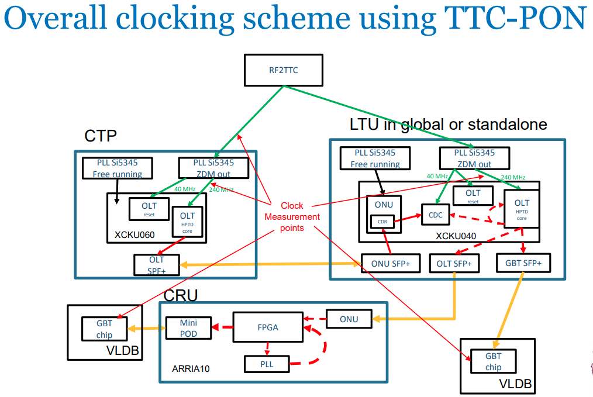
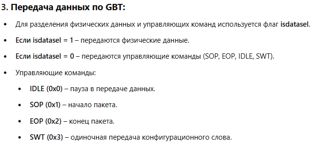
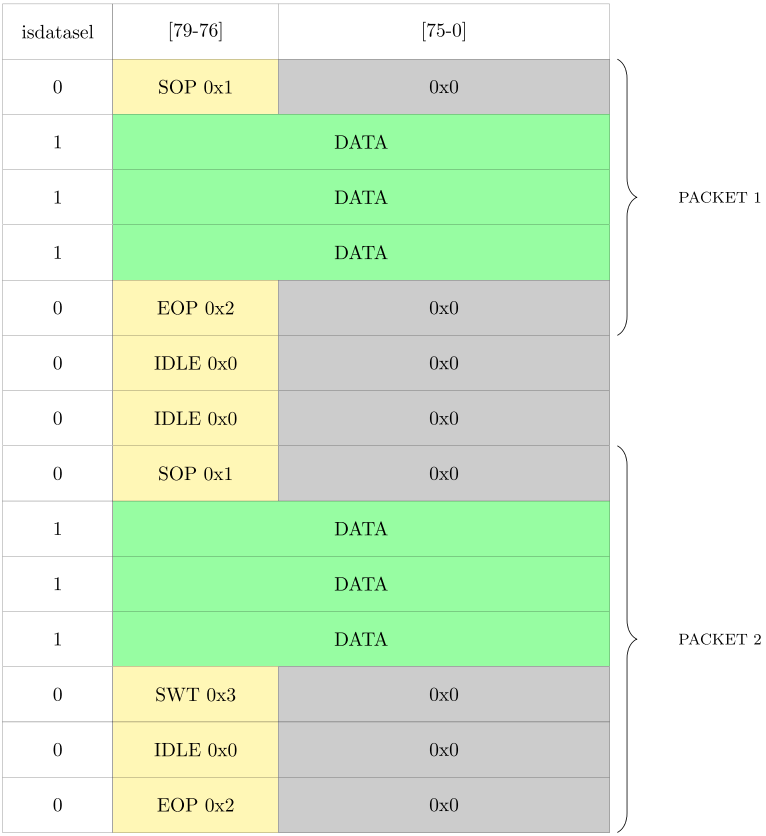
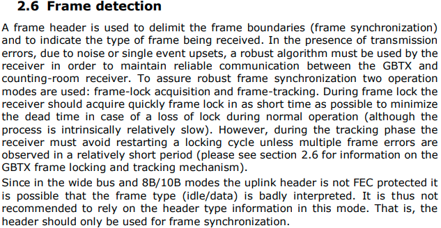
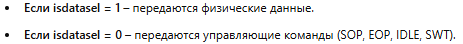
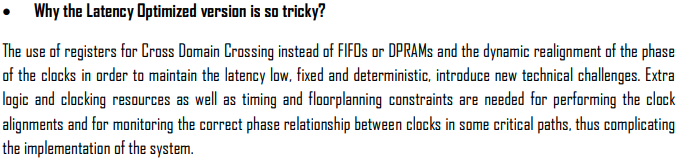
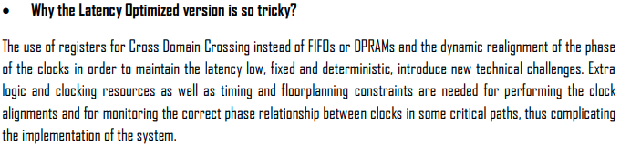
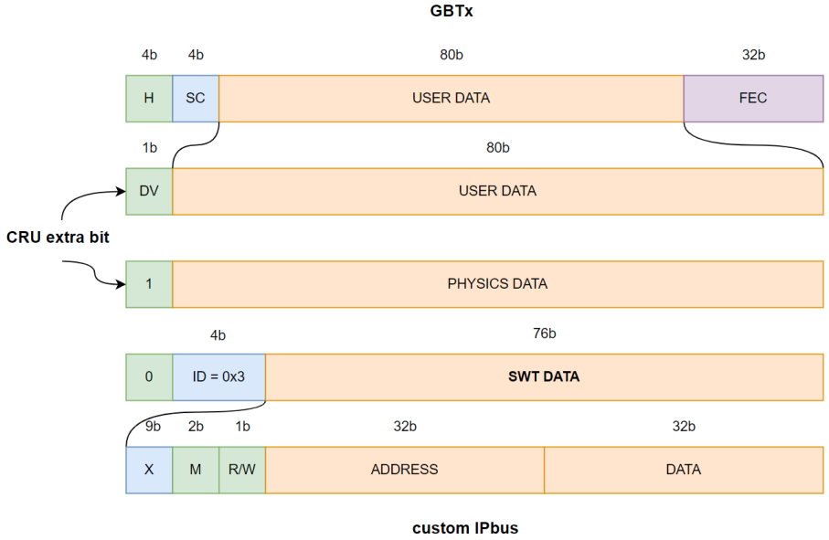
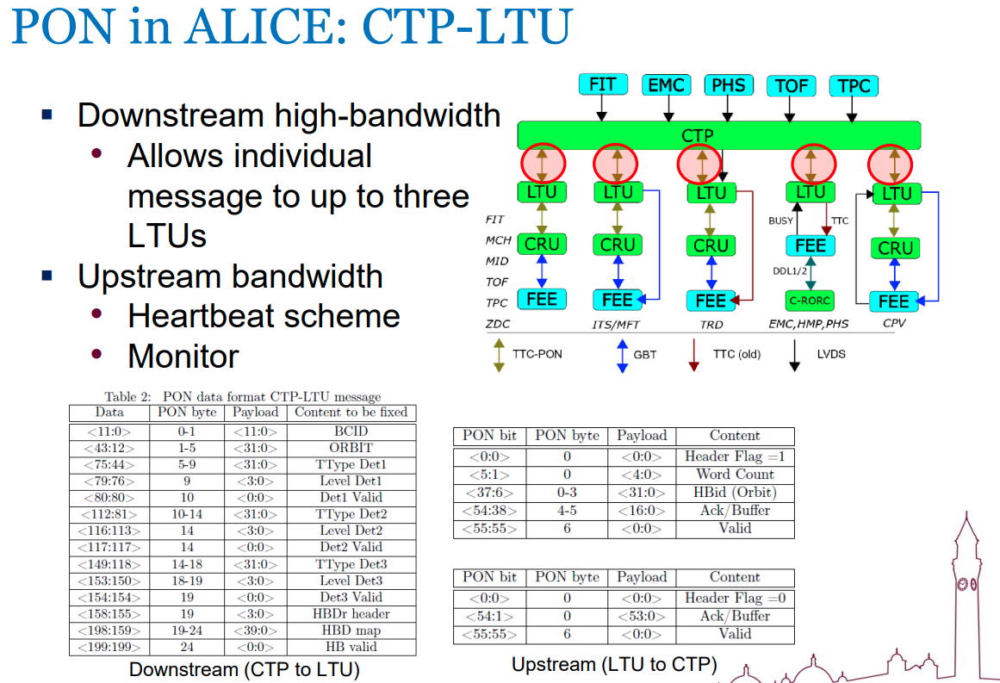
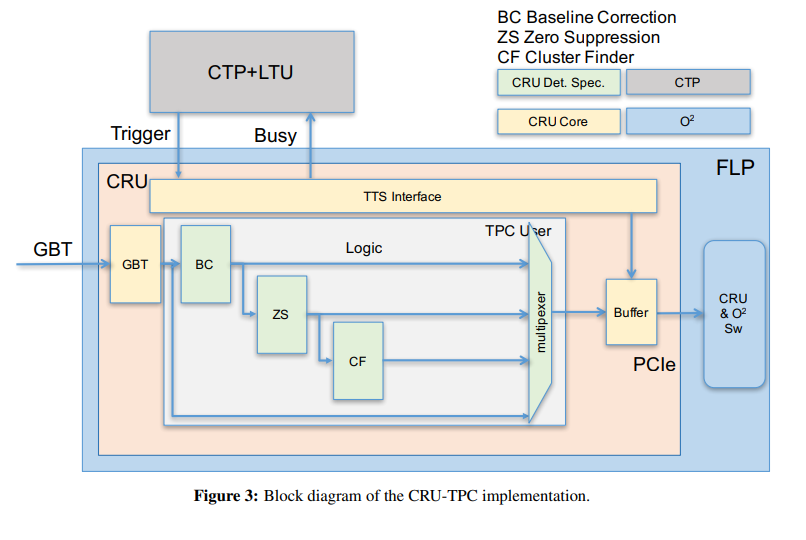

Cru
CRU
- Simplified Block Diagram

Clock



PCIe DMA
Основной поток данных передаётся через интерфейс DMA для перемещения данных от FEE (Front-End Electronics) в память FLP (First Level Processor).
CRU использует PCIe Gen 3 × 16 интерфейс для связи с FLP. Используются два BAR интерфейса: BAR0 и BAR2. BAR0 занимается DMA-операциями, передаёт дескрипторы страниц и следит за статусом сбора данных. BAR2 используется для настройки конфигурации и мониторинга других компонентов прошивки.
üü¢ 05 - LTU - CRU

üü¢ 02 - GBT
У нас есть два типа рамек



Как это работает? Детекторы передают данные к CRU (Central Readout Unit). Если isdatasel = 1, передаются физические события. Если isdatasel = 0, CRU определяет управляющие команды по старшим битам данных. CRU извлекает SWT и отправляет его в FIFO, доступный для системы управления DCS.
 Физические данные обозначены флагом isdatasel = 1, а управляющие команды (IDLE, SOP, EOP, SWT) имеют флаг isdatasel = 0 и содержат другой заголовок, который хранится в поле данных GBT. The CRU extracts the SWT information from the data stream before it reaches the DMA engine and stores it in a dedicated FIFO which is accessed by DCS.
Header

Frame

Is

üü¢ 02.1 Data Frame & Encodings
Success


üü¢ 02.2 Usual Latency
Success
 


üü¢ 02.3 GBT Tx GBT Rx
Success

üü¢ 02.4 Single-Link Example Design
Success
 Tx (передатчик) подключается к Pattern Generator, который создаёт тестовый сигнал.
Rx (приёмник) подключается к Pattern Checker, который проверяет правильность передачи.
Tx (передатчик) подключается к Pattern Generator, который создаёт тестовый сигнал.
Rx (приёмник) подключается к Pattern Checker, который проверяет правильность передачи.
üü¢ 03.1 - GBT-SWT (Single Word Transfer)
Основа:
- Используется только в ALICE для передачи одиночного слова конфигурации.
- Позволяет передавать конфигурационные команды намного быстрее, чем GBT-EC.
- Использует канал GBT-DATA, который может передавать данные со скоростью 3200 Мбит/с (80*40Mhz) (в 40 раз быстрее, чем GBT-EC).
Как работает:
- FPGA на детекторе формирует команду SWT (0x3).
- CRU получает поток данных и выделяет из него команды управления.
- CRU сохраняет полученные команды в FIFO, где они становятся доступными для DCS (детекторной системы управления).
Как выглядит пакает:

üü¢ 03.2 - FLP - FE
text SOP (Start of Packet)
Xxxx

üü¢ 05 - LTU - CTP
 text
BYSY
CRU Говорить что мы пхаем уже много данных 
üü¢ Heart Beat Frames (inside fpl - cru)

üü¢ 999 - ToDo
- В конуе ознакомиться с етим документом: https://physics.bu.edu/~hazen/GLIB/gbt_fpga/tags/gbt_fpga_3_0_0/doc/GBT_FPGA%20_User_Guide_v1_0.pdf